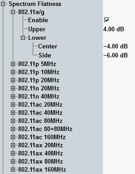

The spectrum flatness limits are defined depending on the WLAN standard and the channel bandwidth.
- For 802.11a,g,p: IEEE 802.11-2012, section 18.3.9.7.3 Transmitter spectral flatness
- For 802.11n (HT): IEEE 802.11-2012, section 20.3.20.2 Spectral flatness
- For 802.11ac (VHT): IEEE 802.11ac-2013, section 22.3.18.2 Spectral flatness
- For 802.11ax (HE): IEEE 802.11ax, section 28.3.18.2 Spectral flatness
The subcarrier ranges and the related spectrum flatness limits are defined by IEEE as listed in the following table.
Standard | Subcarriers | Lower limit | Upper limit |
|---|---|---|---|
802.11a/g/p | -16 to -1, 1 to 16 (center) | -4 dB | 4 dB |
-26 to -17, 17 to 26 (side) | -6 dB | 4 dB | |
802.11n (20 MHz) | -16 to -1, 1 to 16 (center) | -4 dB | 4 dB |
-28 to -17, 17 to 28 (side) | -6 dB | 4 dB | |
802.11n (40 MHz, HT) | -42 to -2, 2 to 42 (center) | -4 dB | 4 dB |
-58 to -43, 43 to 58 (side) | -6 dB | 4 dB | |
802.11ac (20 MHz) | -16 to -1, 1 to 16 (center) | -4 dB | 4 dB |
-28 to -17, 17 to 28 (side) | -6 dB | 4 dB | |
802.11ac (40 MHz) | -42 to -2, 2 to 42 (center) | -4 dB | 4 dB |
-58 to -43, 43 to 58 (side) | -6 dB | 4 dB | |
802.11ac (80 MHz) | -84 to -2, 2 to 84 (center) | -4 dB | 4 dB |
-122 to -85, 85 to 122 (side) | -6 dB | 4 dB | |
802.11ac (80+80 MHz) | contiguous: limits as for 802.11ac (160 MHz) non-contiguous: limits for each segment as for 802.11ac (80 MHz) | ||
802.11ac (160 MHz) | -172 to -130, -126 to -44, 44 to 126, and 130 to 172 (center) | -4 dB | 4 dB |
-250 to -173, -43 to -6, 6 to 43, and 173 to 250 (side) | -6 dB | 4 dB | |
802.11ax (20 MHz) | -84 to -2, 2 to 84 (center) | -4 dB | 4 dB |
-122 to -85, 85 to 122 (side) | -6 dB | 4 dB | |
802.11ax (40 MHz) | -168 to -3, 3 to 168 (center) | -4 dB | 4 dB |
-244 to -169, 169 to 244 (side) | -6 dB | 4 dB | |
802.11ax (80 MHz) | -344 to -3, 3 to 344 (center) | -4 dB | 4 dB |
-500 to -345, 345 to 500 (side) | -6 dB | 4 dB | |
802.11ax (160 MHz) | -696 to -515,-509 to -166, 166 to 509, and 515 to 696 (center) | -4 dB | 4 dB |
-1012 to -697, -165 to -12, 12 to 165, and 697 to 1012 (side) | -6 dB | 4 dB | |
At the R&S CMW, a limit set consists of an upper limit applicable to all subcarriers (except subcarrier 0) and lower limits for the "center" and "side" subcarrier ranges. All limits can be set in the configuration dialog.
